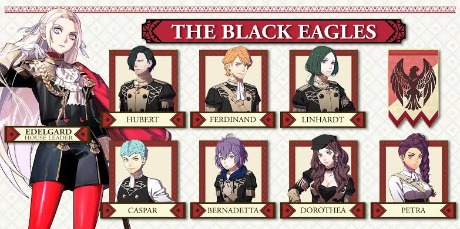
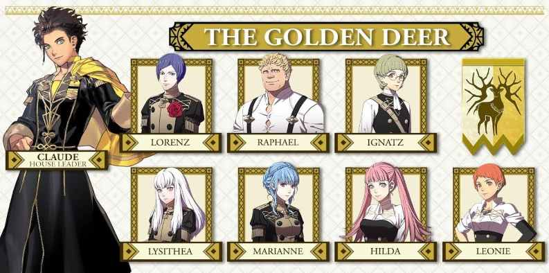
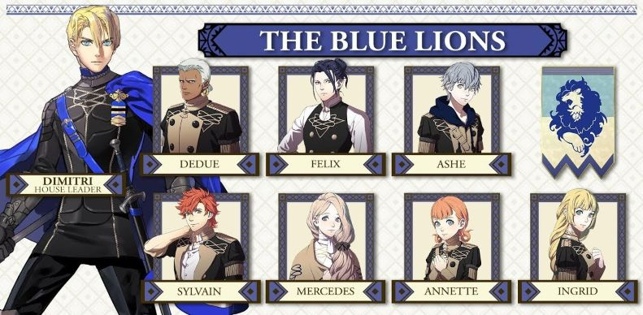
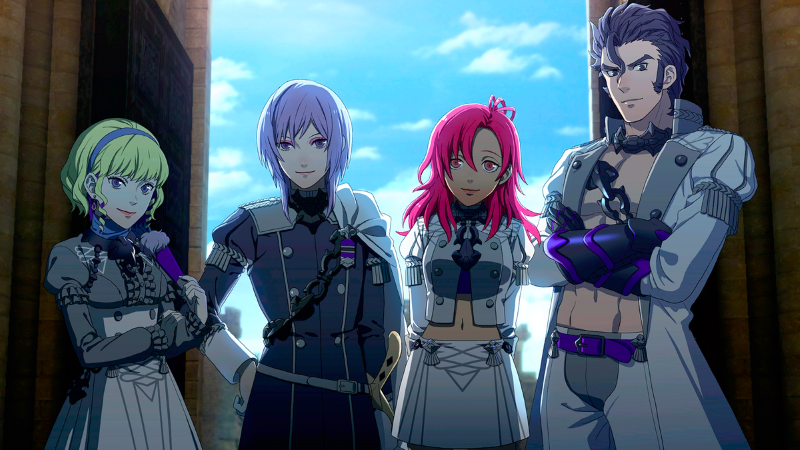

Edelgard Von Hresvelg is next in line in becoming emporor of the Adrestian Empire. She somtimes comes off as cold and very hostile. But mainly comes off this way because how abmitoius she is towards her goals. She isn't found of the current crest system due to how political power is determined weather a child has a crest or not. And dreams of a reality where anyone can become anything if they try hard enough. Outside of that, she sometimes has a childish personality, sometimes fantazising taking a day off to eat only sweets or might complain about being constantly nagged. In her route, she'll slowly open to to Byleth of her reasons and goals.
She's mainly is a Axe user that focus on the heavy armor class. (I need to mention this but, Timeskip Edelgard is considered one of the strongest unit in mainline Fire Emblem History Mainly due to her relic, Aymr, that makes her able to move more than once per turn. Because of this, you can clear entire maps in a single turn.)

Claude Von Riegan is next in line to be one of the many leaders in the Leicester Alliance. Unlike the Empire or Kingdom, Leicster has a bunch of leaders that vote to make choices (Think of the congress if there wasn't a president). Claude is the most carefree out of the three, he also a mischivious and tactical side. Sometimes, he has a problem of not telling his teamates his strategies which can catch them off gaurd. Depsite that, he's very intrested in cultures outside of Fodlan. Unlike the other Edelgard and Dimitri's route which you'll see in a second, his story mainly pre-timeskip is the most causal.
He's mainly uses a bow as his prefered weapon choice.(Timeskip Clade isn't as strong as Edelgard nor Dimitri, but his relic, Failnaught, gives him acsess to a skill that allows him to dodge next attack no matter what.)

Dimitri Alexandre Blaiddyd is the prince of The Holy Kingdom of Faerghus. On the surface, he is the most caring house leader out of the three. He values his friends and subjects and prfers to be viewed as an equal instead of a soon to be king. Though, he is trumatized from his past and is extremly agressive and bitter towards the cruel. In his route, you slowly witness his truama be revaled.
He uses a lance as his prefered weapon choice. (Timeskip Dimitri is the strongest unit in Fire Embelm history in terms with pure strength. His relic, Areadbhar, allows him to easily able to defeat most units with one hit. This isn't counting crit chance nor his crest that combining both can make him do 6 times normal damage.)

There is a forth house that resides underground at the academny, also known as the Abyss. The Ashen Wolves is less of a class and more of a team that helps the residents of the Abyss. The names of them from the left to right is Constance, Yuri, Hapi, and Balthus. Yuri, is technecilly the leader of the house.
They aren't that important but their story takes place during any of the three routes. Upon completing their story for the first time, they can join Byleth's class, regardless of the route.
Fire Emblem is owned by © Nintendo
You can recurit every unit into your class regardless the route, The only exceptions being the house leaders, Hubert, and Dedue.
My personal favorite for each class is, Raphel, Dorothea, Mercedes, and Constance.